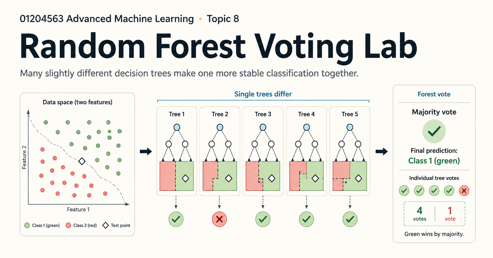

Random Forest Voting Lab: เมื่อต้นไม้หลายต้นช่วยกันตัดสินใจ
{kind=link}

Decision tree หนึ่งต้นอธิบายได้ง่าย แต่มีความไม่เสถียร ข้อมูลเปลี่ยนเพียงเล็กน้อยก็อาจทำให้โครงสร้างของต้นไม้และคำตอบเปลี่ยนไป Random Forest จึงไม่ได้พยายามสร้างต้นไม้ที่สมบูรณ์แบบเพียงต้นเดียว แต่สร้างต้นไม้ที่แตกต่างกันหลายต้นแล้วให้ช่วยกันตัดสินใจ
Random Forest Voting Lab ทำให้กลไกนี้มองเห็นได้ ผู้เรียนเลือกข้อมูล จำนวนต้นไม้ และความลึก แล้วเปรียบเทียบ Single Tree, Bagging และ Random Forest ในสถานการณ์เดียวกัน
ต้นไม้หนึ่งต้นเลือกจุดแบ่งอย่างไร
demo แสดง candidate thresholds ของแต่ละ feature และคำนวณ weighted Gini impurity ให้เห็น จุดที่มีค่าต่ำสุดจะถูกเลือกเป็น split เพราะช่วยแยกข้อมูลให้แต่ละกลุ่มมีความบริสุทธิ์มากขึ้น
การเห็นกราฟของ candidate splits ช่วยให้เข้าใจว่า decision boundary ไม่ได้เกิดขึ้นโดยบังเอิญ แต่เป็นผลจากเกณฑ์ที่โมเดลใช้เปรียบเทียบทางเลือกในแต่ละ node
Bagging ทำให้ต้นไม้แตกต่างกันด้วยข้อมูล
ใน Bagging ต้นไม้แต่ละต้นได้รับ bootstrap sample ซึ่งสุ่มแถวจากข้อมูลฝึกแบบคืนตัวอย่าง ทำให้บางแถวถูกเลือกซ้ำ บางแถวไม่ถูกเลือก และต้นไม้แต่ละต้นเห็นข้อมูลคนละชุดเล็กน้อย
ความแตกต่างนี้มีจุดประสงค์ เมื่อข้อผิดพลาดของต้นไม้ไม่เหมือนกัน การรวมคำตอบมีโอกาสลดความแปรปรวนที่เกิดจากต้นไม้เพียงต้นเดียวได้
Random Forest สุ่มทั้งข้อมูลและ feature
Random Forest เพิ่มการสุ่ม feature ที่อนุญาตให้พิจารณาในแต่ละ split เข้าไปอีกชั้น วิธีนี้ลดโอกาสที่ทุกต้นจะเลือก feature เด่นตัวเดียวกันตั้งแต่ต้น แล้วลงเอยด้วยโครงสร้างและข้อผิดพลาดที่คล้ายกันมากเกินไป
เป้าหมายไม่ใช่ทำให้ต้นไม้แต่ละต้นเก่งที่สุด แต่ทำให้ต้นไม้เก่งพอและแตกต่างกันพอ เมื่อรวมกันแล้วจึงให้ผลที่เสถียรกว่า
Majority vote รวมคำตอบ แต่ไม่ได้เปลี่ยนเสียงข้างมากให้เป็นความจริง
สำหรับ classification ต้นไม้แต่ละต้นออกเสียงให้ class ที่ตนทำนาย แล้ว forest เลือก class ที่ได้เสียงมากที่สุด ผู้เรียนสามารถคลิกจุดข้อมูลหรือเพิ่ม test point ใหม่ เพื่อดูว่าต้นไม้แต่ละต้นโหวตอย่างไรและเสียงข้างมากเปลี่ยนตรงบริเวณใด
อย่างไรก็ตาม การโหวตแก้ได้เฉพาะความไม่เสถียรบางส่วน หากข้อมูลมีอคติ feature ไม่เพียงพอ หรือ pattern ที่ต้องการเรียนรู้ไม่อยู่ในข้อมูล ต้นไม้หลายต้นก็อาจลงคะแนนผิดไปในทิศทางเดียวกันได้
ความลึกมากขึ้นไม่ได้แปลว่าดีขึ้นเสมอ
demo เปรียบเทียบ training accuracy กับ leave-one-out accuracy ตาม maximum depth เมื่อความลึกเพิ่ม คะแนนบนข้อมูลฝึกมักสูงขึ้น แต่ความสามารถกับข้อมูลที่ถูกกันออกไว้อาจหยุดดีขึ้นหรือแย่ลง นี่ทำให้ overfitting กลายเป็นสิ่งที่มองเห็นผ่านเส้นโค้ง ไม่ใช่เพียงคำนิยาม
แบบจำลองเล็กเพื่ออ่านกลไก ไม่ใช่ภาพแทนระบบ production
ชุดทดลองใช้ข้อมูลเพียงสอง features และต้นไม้จำนวนน้อยเพื่อให้ตรวจดูทุกขั้นตอนได้ Random Forest ในงานจริงมักมีข้อมูล features และต้นไม้มากกว่านี้มาก ความเรียบง่ายของ demo จึงมีไว้เพื่อการสอนและทำความเข้าใจกลไก ไม่ใช่เพื่อจำลองขนาดของระบบจริง
ทดลองด้วยตัวเอง Random Forest Voting Lab เปรียบเทียบ Single Tree, Bagging และ Random Forest พร้อมดู splits, trees และ votes